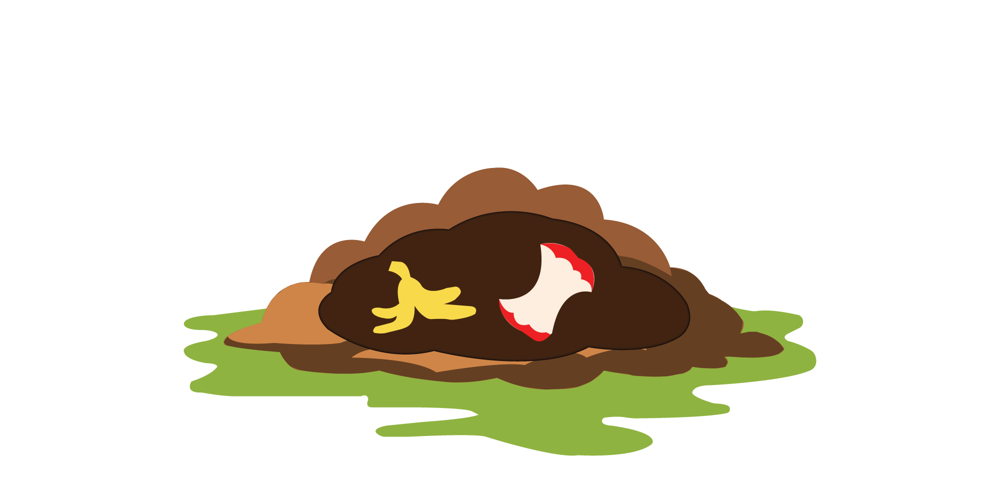
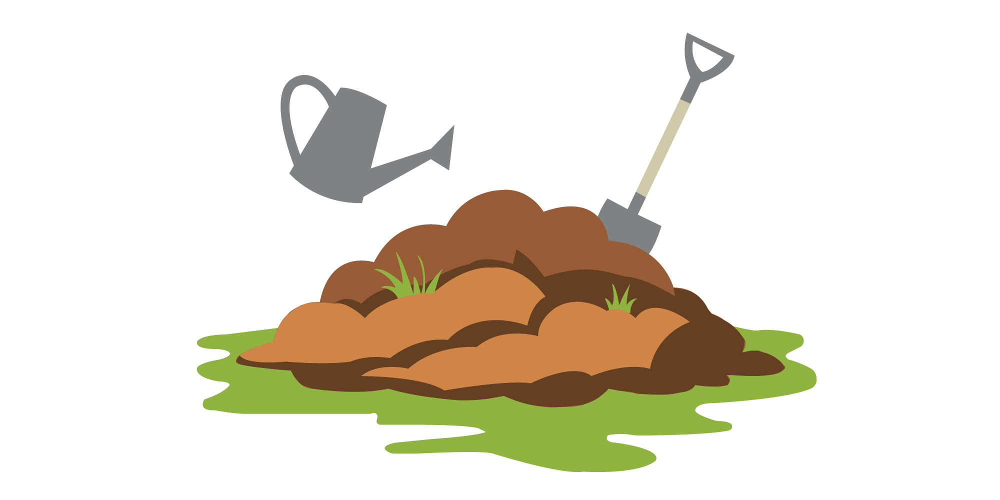
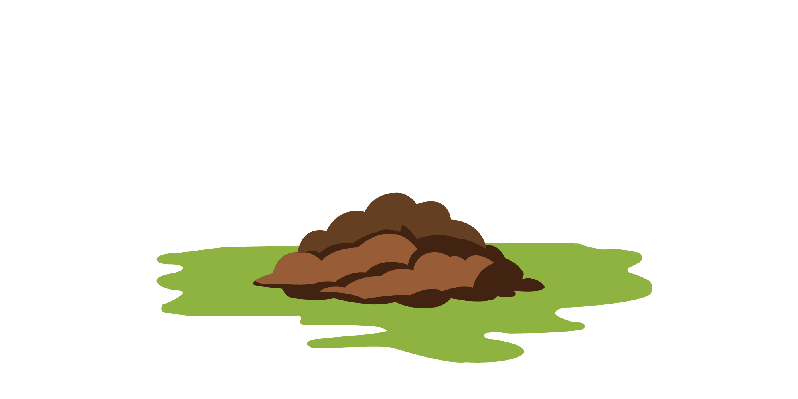

Practicing sustainability amid recycling restrictions
By Parker Brandt | November 23, 2025
After the destruction of Columbia’s Material Recovery Facility in April, some recycling resumed in July under new guidelines. Residents are only able to recycle plastic bottles, plastic cans, aluminum beverage cans and metal food cans. Bundles of mixed fibers, including cardboard and paper, can be left on residents’ curbs for collection but until further notice, they are going to the landfill. Columbia residents have other options for practicing sustainability.
Composting used to combat food waste
According to Eric Hempel, Manager of the Office of Sustainability, one of the biggest contributors to landfills is food waste. While a large percentage of it comes from stores and restaurants, individual consumers and households have options for reducing their output of food waste.
Composting is one of the best methods for disposing of food waste naturally. The city of Columbia offers a class on how to start your own backyard compost.
Feed yard trimmings to your pile as you generate them. The smaller the pieces, the quicker your yard waste will compost.
Food scraps need to be buried and mixed into the center of the pile. Make sure to mix in enough browns to balance your greens. Feed as often as you’d like.

Maintain your pile by turning or mixing it about once a week. Keep it as damp as a wrung-out sponge.

Harvest rich, dark brown finished compost by sifting out unfinished materials after three to eight months. Compost is done when it's crumbly and brown. Remaining materials can be reused or thrown away.

Materials you can composte
Which materials you can recycle under Columbia’s new recycling guidlines
As of July 15, 2025, Columbia introduced new guidelines for residents. These guidelines are in effect while the city partners with Federal Recycling and Waste Solutions in Jefferson City to recycle some materials. Most packaging and containers have a recycling symbol with a number inside it, typically located on the bottom of the item. Residents are to place recyclable materials in their blue recycling bags for pickup.
Landfill tonnage reports remain steady despite diversion efforts
Columbia Sanitary Landfill has collected over 150,000 tons every year for the last ten years. After the Material Recovery facility was destroyed in April, these numbers may rise, as less materials are being diverted to recycling centers.
The city of Columbia adopted a climate pledge in 2019, Climate Action and Adaptation Plan (CAAP), hoping to reduce community greenhouse gas emmissions by 35% by 2035.
Sectors that contribute to Columbia's emissions
According to the Greenhouse Gas Inventory Report for 2024, commercial energy and transportation contribute the most to Columbia's emissions.
Columbia's CAAP goals to reduce emissions by 80%
The city of Columbia's Climate Action and Adaptation Plan (CAAP) is to reduce its overall emissions by 80% by 2050 and to be completely carbon neutral by 2060. The CAAP emphasizes not only using cleaner energy, but also individual choices make progress toward their goals.

Sources: City of Columbia, Missouri Department of Natural Resources